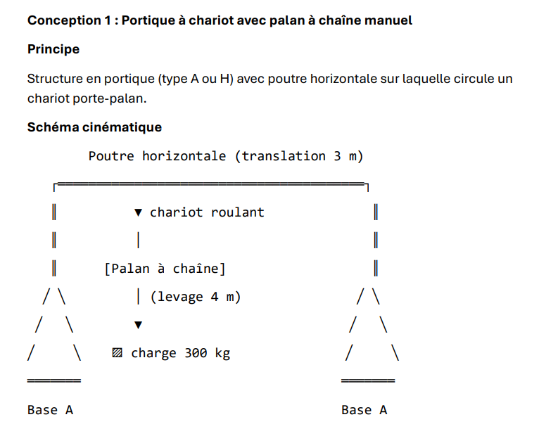
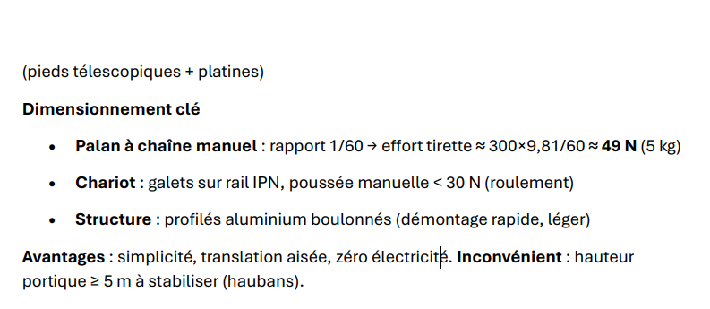

Ficelles
Coton Ø 1,5 mm (résiste à 1 kg) et jute Ø 2,5 mm (résiste à 2 kg).
La Brigada Nueve · Semaine d'intégration · Boucle 1 : Conception
Conception d'une grue manuelle, démontable et frugale, validée par une maquette à l'échelle 1:10.

Concevoir une grue capable de soulever 300 kg sur 4 m de haut avec une portée de 3 m, simulée par une maquette à l'échelle 1:10. Le cadre est le changement climatique : réduire nos émissions.
2,5 jours, soit 4 demi-journées, avec un concours à la fin.
Maths, algèbre, géométrie, trigonométrie, physique, bases de la mécanique, PFS, PFD.
| Étape | Durée | Qui |
|---|---|---|
| Intervention de l'expert en mécanique (prise de notes) | 2 h | Groupe |
| Mise en commun des notes, lien avec le projet | 15 min | Groupe |
| Analyse de la fiche IA | 15 min | Autonomie |
| Étude des ressources, puis choix du système | 1 h | Groupe |
| Discussion sur la conception la plus adaptée | 30 min | Groupe |
| Schéma cinématique | 1 h | Groupe |
| Note de calcul des charges (répartition) | ½ journée | Rezan, Amed, Victoria |
| Dimensionner la maquette et commencer le montage | ½ journée | Groupe |
| Vérifications et derniers détails | ½ journée | Groupe |
Le plan d'action a été fait sur 3 jours, alors qu'il fallait le faire sur une journée par boucle.
Coton Ø 1,5 mm (résiste à 1 kg) et jute Ø 2,5 mm (résiste à 2 kg).
Carton, fil de fer, deux plaques d'environ 9 × 12 cm pour rigidifier et supporter les axes.
Poulies de deux diamètres, engrenages de trois tailles, pics à brochette pour les axes.
Quelques boulons avec écrous, colle chaude.
Balance suspendue et poids de référence.
Principe : structure en portique (type A ou H) avec une poutre horizontale sur laquelle circule un chariot porte-palan. Les deux mouvements, vertical et horizontal, sont clairement séparés.
Avec notre matériel : le carton fait les montants et la poutre, les plaques renforcent les zones sous charge, les pics et le fil de fer servent d'axes. Sans palan à chaîne, on réalise un treuil manuel démultiplié : manivelle, engrenages, tambour, ficelle, poulies.
Principe : un mât vertical pivotant porte une flèche relevable. Le levage se fait au treuil, la translation par rotation du mât.
Limite : une charge éloignée du mât crée un fort moment de renversement. Il faut un lestage ou un ancrage, ce qui nuit à la démontabilité. Le pivot rigide et la base stable en carton sont aussi plus délicats.
Principe : un trépied, un bras déformable en parallélogramme et un système de mouflage. La solution est compacte, légère et stable.
Limite : il faut plusieurs liaisons pivot bien alignées. En carton, avec des axes en pics ou en fil de fer, les jeux, frottements et déformations gênent le fonctionnement, et le déplacement horizontal précis est difficile à régler.
| Critère | Portique + chariot | Grue pivotante | Trépied / parallélogramme |
|---|---|---|---|
| Compatibilité avec le carton | Très bonne | Moyenne | Moyenne |
| Utilisation des poulies | Très bonne | Très bonne | Très bonne |
| Utilisation des engrenages | Très bonne | Très bonne | Moyenne |
| Facilité de fabrication | Très bonne | Moyenne | Faible |
| Stabilité de la maquette | Bonne | Plus délicate | Bonne mais complexe |
| Translation horizontale de 30 cm | Simple | Par rotation | Complexe |
| Levage vertical de 40 cm | Simple | Simple | Simple |
| Réglage / mise au point | Simple | Moyen | Complexe |
| Risque de blocage ou de jeu | Faible | Moyen | Élevé |
| Adéquation globale au matériel | Excellente | Correcte | Moyenne |
Nous avons comparé les trois solutions selon les contraintes du cahier des charges : lever 300 kg jusqu'à 4 m, les déplacer sur 3 m, utiliser uniquement l'énergie humaine, permettre l'usage par une seule personne, et obtenir un système simple, stable, démontable et transportable.
Nous avons retenu le portique à chariot mobile avec treuil manuel et système de poulies, simple à fabriquer avec le carton, les poulies, les engrenages, la ficelle et les pics à brochette.
C'est le meilleur compromis entre simplicité, stabilité, efficacité, ergonomie et facilité de réalisation.

Fais glisser pour tourner autour du portique. Les curseurs commandent le chariot (3 m, soit 30 cm sur la maquette) et le levage (4 m, soit 40 cm).
Effort = masse × 9,81 ÷ rapport de réduction. Avec un palan 1/60 et 300 kg, on obtient environ 49 N (5 kg). Modifie les valeurs pour tester.
Pour la maquette, le rapport réel reste à calculer : il faut relever les dents des engrenages et le diamètre du tambour. Le coton résiste à 1 kg et le jute à 2 kg, ce qui limite la charge d'essai.